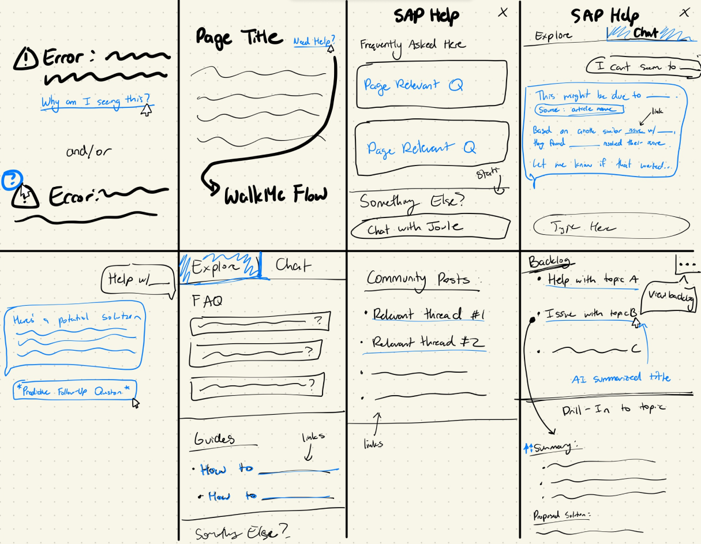
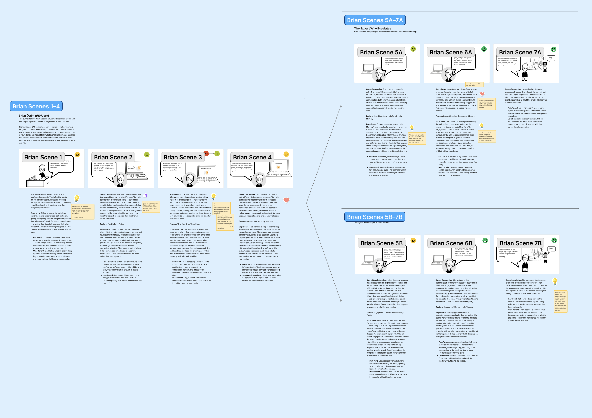

This case study is password protected. Enter the password to continue.
Product DiscoveryProduct DirectionRITE Testing
02 · The Support Landscape Nobody Had Mapped · Jan–Apr 2026 · 4 phases
The Support Landscape Nobody Had Mapped
Self-service wasn't failing because SAP lacked resources. It had 74, across 5 platforms. It was failing because users knew 3. I mapped the structural reasons why. The findings became requirements. The requirements became a product.
My Role
Sole researcher across all 4 phases. Owned the full scope: survey design, interview recruitment and facilitation, CSM study design, synthesis and product framing, RITE study design and delivery, and all stakeholder readouts.
Generated requirements for the Next Gen Panel — SAP's redesigned in-product help panel — a role-filtered, AI-first entry point replacing the curation CSMs were doing manually. RITE testing validated the prototype with 80%+ task success and surfaced 8 refinements before launch. Product launching August 2026.
Context & Research Opportunity
SAP is enterprise software used by large organizations to manage business operations across finance, HR, IT and supply chain. The users in this study were the IT admins and business users who run those systems day to day, and the Customer Success Managers (CSMs) who support them when things go wrong.
When stakeholders first came to me, they wanted to understand why support ticket volume was climbing. I thought that was the wrong place to start. A ticket only appears after someone has already tried to help themselves and failed. I proposed we go upstream instead: map what users were actually doing before they gave up. That reframe wasn't a guaranteed sell. Phase 1 validated it fast.
Nobody had mapped SAP's help ecosystem before I did. When I finished, there were 74 resources across 5 platforms. I put the full list in front of users and asked them to identify what they knew. The average was 3. That number, measured directly rather than self-estimated, became the foundation of everything that followed.
The discoverability gap: each dot is one resource
3 avg. known by end users71 unknown or undiscovered
Research Program
Four phases, Jan–Apr 2026: Survey established scale, user interviews revealed behavior, CSM interviews triangulated the structural pattern and RITE testing validated the solution. 100 total participants across all phases.
Phase 1: Ecosystem survey (n=66)
Catalogued 74 resources across 5 platforms. First time the landscape had been fully documented.
Users aware of only 3 resources on average. High awareness did not produce adoption. This reframed the problem from ticket volume to discoverability.
Phase 2: User interviews (n=18)
Mapped two divergent support paths: direct-to-human (8/18) vs. self-service first (10/18).
14 of 18 participants named AI as their near-ideal support model — unprompted. The interview guide asked about ideal support experiences; no AI framing was introduced by the researcher.
Phase 3: CSM interviews (n=11)
CSMs were manually filtering 25+ resources down to ~13 before customers started. This curation work belonged in the product.
All 11 CSMs independently named a role-filtered single entry point as the critical missing capability.
Phase 1 Survey (n=66): Resource awareness by platform across end users, admins and content creators. SAP Central had the highest recognition across all three groups. Tools like Learning Hub, openSAP and training resources were largely invisible. Average awareness: 3 resources known out of 74.
Key Findings
Three phases, 95 participants, and five patterns I couldn't explain away by role or method. They surfaced across surveys, interviews and CSM conversations. Regardless of who was in the room, the same structural problems kept coming back.
Theme 1
No mental model of the ecosystem
Most users assumed SAP Central was the only entry point. The ecosystem was invisible to the people it was designed to serve.
Theme 2
Escalation was the path of least resistance
For 8 of 18, calling a CSM was faster than using the system. The product had trained its users to bypass it.
Theme 3
Content existed but context was missing
Resources surfaced for everyone. They applied to almost no one specifically. Users were doing the relevance filtering themselves.
Theme 4
Language was a structural barrier
Users searched in plain language. SAP docs used internal taxonomy. If you didn't know the right term, the right answer was out of reach.
Theme 5
AI was the unprompted near-ideal model
14 of 18 described the same ideal without being asked: AI that speaks plain language, knows their context and returns one answer. The strongest signal in the data set. It became the design requirement.
"I'm the Siri of SAP. When customers can't find something, they call me."
CSM, Phase 3 interview — summarizing the structural problem in one sentence
Path A: Direct to Human (8 of 18 participants)
Triggered by high urgency or prior failures. Self-service is never considered.
Problem Occurs
Problem arises. High urgency or high stakes.
›
Colleagues
When colleagues aren't available or can't help.
›
SAP Consultant / Ticket
Immediate escalation. Self-service is never attempted.
Path B: Self-Serve First → Gradual Escalation (10 of 18 participants)
Lower-stakes issues, prior self-service success. Escalation is a last resort.
Problem Occurs
Problem arises.
›
Google / YouTube / AI
Most common first resource. Preferred for visual, quick-answer formats.
›
Colleagues
When first step fails, the people next to them or reachable quickly.
›
SAP Resources
When colleagues can't help; deeper technical documentation.
›
SAP Consultant / Ticket
Last resort. Slow and expensive. Filed only when everything else fails.
The research had its answer. The product team needed a brief.
From Research to Product Direction
Three data sets pointing to the same gap made the case straightforward. The question was what to do with it. I didn't hand off a deck of findings and step back. I worked with the product team to turn the research into a design direction — mapping the requirement, tracing it back to the data and then working through what it could look like in use before anyone started building.
The ecosystem users had to navigate: 9 of 74 resources shown. End users were aware of an average of 3. Admins averaged 7+. The curation work belonged in the product.
Current state
User hits an issue → attempts self-service → fails → contacts CSM → CSM manually curates and filters resources → user gets an answer. CSM absorbs the navigation burden.
→
Design requirement (research-generated)
One role-filtered, AI-first entry point. Surfaces relevant resources by product, role and situation. Diagnoses problems directly. Replaces the curation work CSMs were absorbing manually.
All three data sets converged on the same requirement.
From finding to feature: Three research findings mapped directly to panel requirements and features. Discoverability gap drove a role-filtered home screen. Language mismatch drove Joule natural language search. CSM manual curation drove contextual resource surfacing.
Design process
By the end of Phase 3, I had a clear picture of the problem but no product. The research pointed to what was needed, but the team needed a shared understanding of what that actually looked like in use before anyone could start building. I facilitated an HMW session to turn the findings into design questions — moving from "users can't find relevant resources" to something the team could act on. From there I worked through early sketches to explore what the panel could feel like: the layout, the hierarchy, how Joule (SAP's AI assistant) would sit relative to the other resources. The storyboard came last. I needed to make the primary use case concrete. Not a list of requirements, but a specific person, in a specific moment, trying to solve a real problem. That's Brian.
HMW session: five journey phases mapped across admin, IT and end user target users.User focus view: admin, IT and end user flows with proactive support and personalization as organizing themes.HMW themes: session output clustered into actionable design questions by theme.

Concept sketching: HMW themes translated into panel layout and interaction ideas.

Storyboard: Brian (Admin/S-User). Seven-scene user journey from problem onset through troubleshooting, escalation and case creation. Used to align the team on the primary IT admin use case before prototype development began.
Research output
Introducing the Next Gen Panel
That convergence became the product brief for SAP's redesigned in-product help experience, launching August 2026. One role-filtered entry point. Joule, SAP's AI assistant, handles what CSMs were absorbing manually.
Single entry point: Joule search, contextually surfaced materials and recents replace 5-platform navigation. Requirements generated directly from this research program.AI-first resolution: Joule diagnoses errors in context, surfaces troubleshooting steps and creates a pre-filled support case without the user leaving the product.
The brief became a prototype. The prototype needed testing.
Phase 4: RITE Testing the Panel
RITE testing, run in two rounds. I didn't go in knowing what the prototype had missed — that was the point. Round one surfaced what participants actually did with the panel, which was different enough from what the team expected that the prototype was adjusted before round two began. Three tasks. Three ways IT admins actually hit a help panel in real work.
Discovery had covered the full range of user types. For RITE, I scoped to IT admins and S-Users — the users most likely to encounter the panel's primary use cases in daily work: technical troubleshooting, error diagnosis and system configuration support. Testing with the highest-stakes user group first gave the most relevant signal before launch.
Prototype tested in RITE sessions: The Next Gen Panel home screen showing Joule search, contextually surfaced relevant materials and a recents section. Five IT admins and S-Users interacted with this prototype across three core task scenarios.
5
IT admin & S-User (SAP standard user) participants
80%+
Task success rate
8
Refinements before launch
Refinements included AI identity labeling on the search bar, persistent chat history and audit trail visibility for AI-driven configuration changes — surface-level changes that addressed the gap between what the prototype assumed and what users actually needed.
Finding 1
Entry point trusted. First impression wrong.
The ? icon had universal recognition. But they arrived expecting search, not AI. First screen. First friction.
Finding 2
Joule's AI identity was invisible by default
2 of 5 never recognized the search bar as AI. Where Joule was discovered, it was accidental. When they did reach it, the reaction was immediate. The feature worked. The panel wasn't introducing it.
Finding 3
Context-free guidance creates distrust
Participants expected guidance tailored to their specific environment and version. Generic steps read as a documentation dump. Context-free responses led to faster disengagement.
Finding 4 · Enterprise insight
Admins want AI that guides. With a paper trail.
Participants embraced Joule's speed and diagnostic capability. But two named auditability as a hard requirement for AI-driven config changes. Not resistance to AI. The exact conditions for adoption. Speed without a record isn't a feature. It's a risk. This finding was independently corroborated by concurrent research across the organization.
Joule in action: when participants reached it, the reaction was immediate.
"I think is the best, best idea of the model because I've seen an error when testing the connection and I'm able to get the AI to analyze for me what might be wrong with my connection and how to troubleshoot it."
P3, on Joule root cause analysis
"It should not bypass the audit trails. Everywhere, whenever we are creating, the way we maintain the audit trails in a normal configuration scenario, if we are doing via AI also, those audit trails should be available, who has created, when it has been created, so on and so forth."
P4, on AI governance in enterprise workflows
"
"There was a company that ran some AI agent to do some execution. Cleaned up their whole production database, wiped it off with the backup. So those kind of news that you see, then these fix it for me button becomes, wait, uh, let me think about it."
P5, on why enterprise admins pause before trusting AI-driven actions
The loop closed
Discovery found the problem. Direction wrote the brief. RITE put it in front of real users and found what the brief had missed. Not because the brief was wrong. Because some requirements only surface when there's something real to react to. Persistent chat history wasn't in the brief. The governance requirement wasn't in the discovery data. It took a working prototype to surface both. Eight refinements entered the backlog. The architecture held. The product got sharper.
Cross-Functional Influence
The reframe that created buy-in
The original ask was to explain ticket volume. I pushed back. A ticket only tells you someone gave up — it doesn't tell you what they tried first. I proposed a landscape study that started upstream, before any failure had been filed. That wasn't what stakeholders expected to hear. But once Phase 1 data came back with 74 resources and an average awareness of 3, the conversation shifted. It was no longer about optimizing a support process. It was about a product problem that nobody had named yet.
"I'm the Siri of SAP" did more work than any slide. A single CSM quote made the structural problem legible to stakeholders without a research background.
Three independent data sets converging on one requirement made the findings hard to dismiss. The executive sent an unsolicited DM requesting wider distribution. The research reached product leadership. The Next Gen Panel followed.
Impact
Next Gen Panel added to the August 2026 roadmap as a direct result of this research — not a pre-existing planExecutive stakeholder sent an unsolicited DM requesting the research be shared org-wide; described as the first fully holistic review of SAP help and supportAll 5 RITE participants independently raised persistent chat history as a missing feature — a requirement that did not exist in the discovery data
"I think this is the first research I've seen at SAP with a fully holistic review of help and support. I didn't know the extent of the problems with this experience, and how much each individual issue exacerbates the others. Let's get some more eyes on this."
Executive stakeholder — unsolicited DM following the research readout
Reflection
RITE testing surfaced two requirements generative research could not have found
Persistent chat history and AI identity signaling didn't emerge from the discovery study. That's not a gap. Generative research surfaces how people behave in an existing system. It can't surface expectations about something that doesn't exist yet. That required a prototype. Running both phases is what builds the full picture.
The governance finding was the most important output of the RITE study
This wasn't a usability finding. It was a product direction signal. The adoption ceiling for AI in critical enterprise workflows isn't set by capability or interface quality. It's set by trust architecture. That distinction belongs in a product brief, not a research report. I flagged it directly to stakeholders as a prerequisite for adoption, not a refinement.
The reframe was the hardest call — and I'd run the CSM phase earlier next time
When stakeholders came with a ticket volume question, I pushed back and proposed a landscape study instead. Phase 1 validated the reframe fast, but I went in without a guarantee. I'd make the same call again. What I'd change: CSM interviews corroborated Phase 2 findings after the fact. Running them in parallel would have let me target sharper user profiles in Phase 2 and tightened the cross-phase triangulation from the start.
Study limitations
Phase 1 (n=66): Self-selected sample. Participants motivated enough to complete a survey about support resources likely overrepresent more engaged users — those who have given up on self-service entirely may be underrepresented.
Phase 2 (n=18): Sample skewed toward BTP-adjacent roles and more technically experienced users. Findings may not fully represent users on older SAP product lines or lower-technical roles.
Phase 3 (n=11): All CSMs shared a similar customer-success function within a single support tier. Structural patterns may differ across regions or product tiers.
Phase 4 (n=5): Five participants provides directional signal, not statistical confidence. The governance finding (2 of 5) is a strong hypothesis corroborated by concurrent research — but warrants broader validation before becoming a hard product requirement.
Scope: The study mapped awareness and behavior patterns. It did not measure actual self-service resolution rates — the downstream metric that would confirm whether the identified gaps translate directly to business impact.